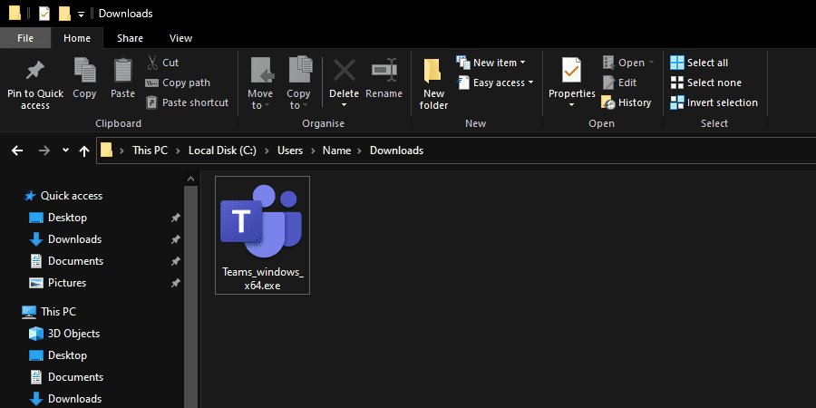
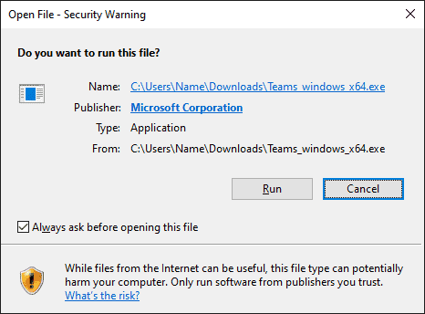

Teams
Contents
Well let's get started, to install Teams you only need to follow 2 simple steps:
Just a quick note, this how-to is also the exact same process for upgrading an existing Teams installation!
Download Teams
To download teams, simply click the following link:
Microsoft Teams Download Page
You should then see something similar to this:

From here simply select:
 Download Teams
Download Teams
Then hit "Save File" or "Keep" depending on your choice of browser.
And that's it for downloading, on to the next step!
Install Teams
Now we have downloaded Teams, the next step is to simply run it!
Navigate to your downloads folder, this is usually something along the lines of:
C:\Users\<your username>\Downloads\
For Windows users it will most likely be called "Teams_windows_x64.exe" and look similar to this:
When you have found the Teams installer, simply double-click on it to start the install.
If you happen to be presented with the following, simply hit "Run" to start the installation.
During installation, you may breifly see the following small pop-up, don't worry if you don't, Teams installs very quickly so you may miss it.
Once Teams has been installed, it will automatically open up, asking you to sign in.
Now that Teams is installed successfully, we can move on to the next step!
Logging in to Teams